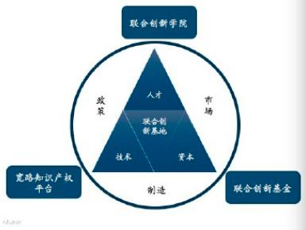

日本におけるグローバルジョイントイノベーション基地の創立についての提案
概要
「グローバルウイズダム、ジョイントイノベーション」の理念のもとに、日本海外投資協力株式会社は「日本と世界は共同で革新する」というコンセプトを提出し、業界を超えるインベストメント及びコラボレーションでの長年の経験と結び付け、日本の世界に唯一無二の市場、人材、資本、製造・技術及び政府政策の総合優位を利用して、日本政府とともに「日本グローバルジョイントイノベーション基地」（以下は「基地」と言う）を建設する。基地は業界を超える投資基金、グローバルＩＰコラボレーションプラットフォーム及びジョイントイノベーションアカデミーという三大のプラットフォームによって構成される。日本を世界経済圏に最もポテンシャルのある「グローバルジョイントイノベーションゾーン」にすることを推進し、更に多くの日本及び海外企業や金融サービス機構や各界の人材が日本でのジョイントイノベーションを引き付け、協力しウィンウィンに達し、後世の人に幸福をもたらす。
图1.ジョイントイノベーション基地の全体の構想
一、グローバルジョイントイノベーションリード基金の創立
日本海外投資協力株式会社は日本政府及び金融機構とグローバルジョイントイノベーションリード基金（以下は「ジョイントイノベーション基金」と言う）の設立を提案する。ジョイントイノベーションリード基金は米ドルと日本円の基金からできる。 ジョイントイノベーションリード基金のメイン投資方向は下記通りである。 （1） 米ドル基金で世界の成熟した技術及び知識財産権（以下は「ＩＰ」と言う）に投資する。 （2）日本円基金で優れたＩＰと日本企業が日本で成立する協力企業に投資する。
1. ジョイントイノベーションリード基金のポジショニングと投資方法
ジョイントイノベーションリード基金の投資作戦は投資利益率を追求すると同時に投資を受けた企業の成功率を上がることである。ジョイントイノベーションリード基金は世界において日本産業ニーズに合う成熟した技術、ＩＰを選別して、それらのＩＰを日本の上場会社、中小企業及びパートナーとドッキングさせ、共同で日本に合弁会社を創立し、また一部の合弁会社に投資する。
2. 伝統的なＰＥ/VCと比べる基金の優位
日本海外投資協力株式会社はジョイントイノベーションの投資方法を唱え、投資の的はスタートアップではなく、世界での成熟した技術とＩＰである。成熟した技術によって賢い人材と資本の協力を引き付ける。こういう強いタッグを通じて、投資された企業の生存率を大幅に高める。同時に、ジョイントイノベーション基金には短い投資周期、素早い退出ルート、高い金融のてこ、大量な外貨の節約などの特徴がある。
3. 基金管理チームの優位
日本海外投資協力株式会社及び協力する管理チームは30年以上の日本と海外投資革新の経験を持つ。